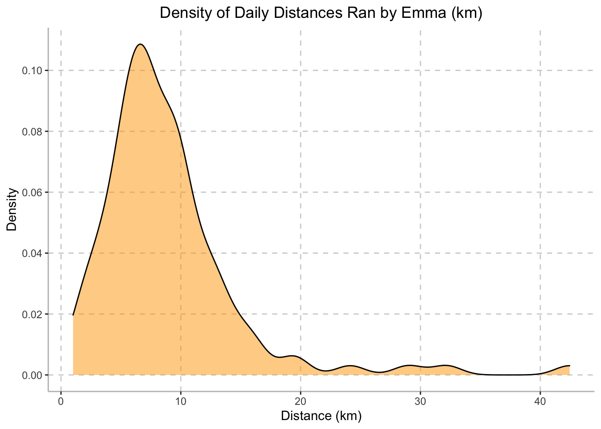
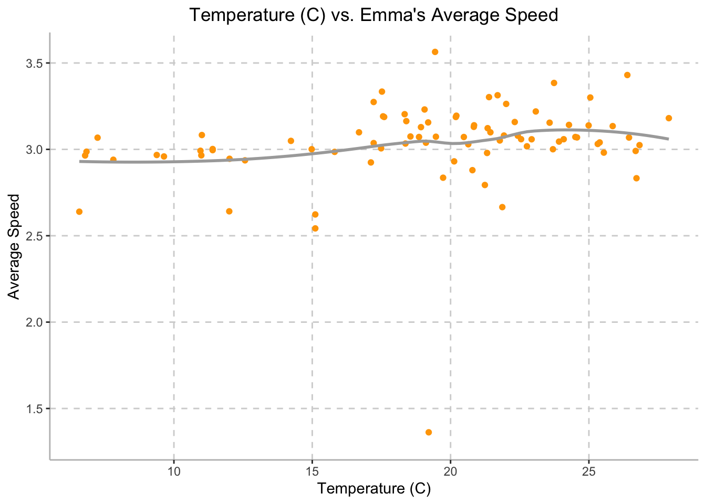
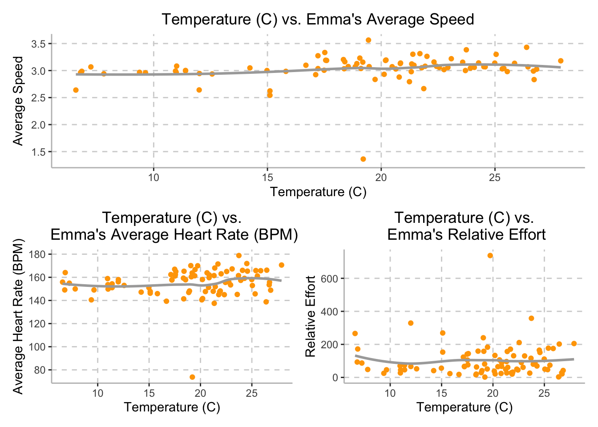
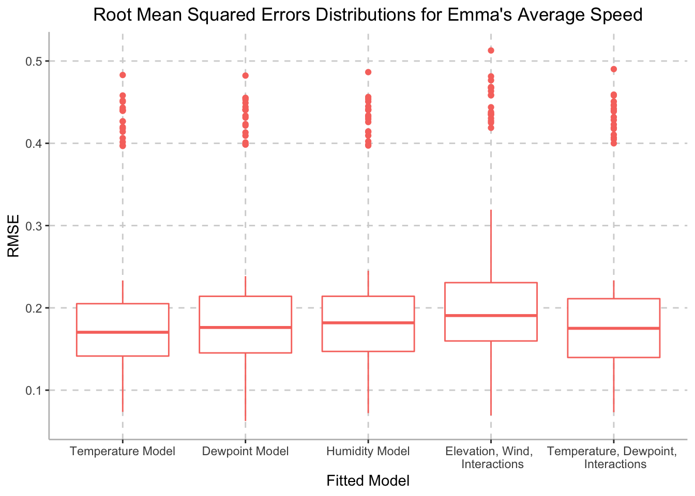

Final Report
Motivation: Provide an overview of the project goals and motivation.
Running a marathon requires an immense amount of time, effort, and dedication. First-time marathon runners are forced to make decisions with little knowledge of what to expect. Being ill-prepared and over-training are two common experiences that occur during training and on race day. Emma, one of our group members, ran the New York City Marathon (NYCM) this past fall, which was her first marathon. After completing the marathon on November 6th, Emma was prepared to start training for the next one. Therefore, we are interested in understanding the impact of external factors, such as temperature, wind, elevation, etc., on Emma’s speed and performance during the marathon, while also considering how training changed over time in order to improve her training for next marathon.
Initial Questions: What questions are you trying to answer? How did these questions evolve over the course of the project? What new questions did you consider in the course of your analysis?
For the purposes of this project, we will be answering the following questions:
- What does Emma’s training schedule look like with respect to environmental factors such as temperature, humidity, elevation, etc.?
- What are Emma’s optimal training conditions?
- What are Emma’s most comfortable training distances?
- How do environmental factors affect Emma’s performance? Are these factors good predictors for her performance?
Data: Source, scraping method, cleaning, etc.
In preparation for data analysis, we will load the following libraries:
library(tidyverse)
library(FITfileR)
library(dplyr)
library(patchwork)
library(leaflet)
library(modelr)Data was collected using the Garmin Forerunner 245 activity watch
from July 23, 2020 to November 6, 2022. Collected data was uploaded to
Strava.com after each activity. After granting permission, personal data
was downloaded from Strava.com. Summary data for each activity post was
saved in the form of a .csv file (imported using
tidyverse) and per-second data for each activity was
compiled and saved in a .fit file (imported using
FITfileR).
Importing & Describing Raw Data
First, we imported the summary-level data of all of Emma’s training
runs from July 23, 2020 to November 6, 2022 using the
read_csv function.
training_raw <- read_csv("activities/activities.csv") %>%
janitor::clean_names()## New names:
## Rows: 335 Columns: 84
## ── Column specification
## ──────────────────────────────────────────────────────── Delimiter: "," chr
## (6): Activity Date, Activity Name, Activity Type, Activity Description,... dbl
## (49): Activity ID, Elapsed Time...6, Distance...7, Max Heart Rate...8, R... lgl
## (29): Commute...10, Athlete Weight, Bike Weight, Average Positive Grade,...
## ℹ Use `spec()` to retrieve the full column specification for this data. ℹ
## Specify the column types or set `show_col_types = FALSE` to quiet this message.
## • `Elapsed Time` -> `Elapsed Time...6`
## • `Distance` -> `Distance...7`
## • `Max Heart Rate` -> `Max Heart Rate...8`
## • `Relative Effort` -> `Relative Effort...9`
## • `Commute` -> `Commute...10`
## • `Elapsed Time` -> `Elapsed Time...15`
## • `Distance` -> `Distance...17`
## • `Max Heart Rate` -> `Max Heart Rate...30`
## • `Relative Effort` -> `Relative Effort...37`
## • `Commute` -> `Commute...50`skimr::skim(training_raw)| Name | training_raw |
| Number of rows | 335 |
| Number of columns | 84 |
| _______________________ | |
| Column type frequency: | |
| character | 6 |
| logical | 29 |
| numeric | 49 |
| ________________________ | |
| Group variables | None |
Variable type: character
| skim_variable | n_missing | complete_rate | min | max | empty | n_unique | whitespace |
|---|---|---|---|---|---|---|---|
| activity_date | 0 | 1.00 | 23 | 25 | 0 | 335 | 0 |
| activity_name | 0 | 1.00 | 4 | 96 | 0 | 314 | 0 |
| activity_type | 0 | 1.00 | 3 | 15 | 0 | 6 | 0 |
| activity_description | 111 | 0.67 | 4 | 550 | 0 | 224 | 0 |
| activity_gear | 326 | 0.03 | 12 | 12 | 0 | 1 | 0 |
| filename | 4 | 0.99 | 25 | 28 | 0 | 331 | 0 |
Variable type: logical
| skim_variable | n_missing | complete_rate | mean | count |
|---|---|---|---|---|
| commute_10 | 0 | 1 | 0 | FAL: 335 |
| athlete_weight | 335 | 0 | NaN | : |
| bike_weight | 335 | 0 | NaN | : |
| average_positive_grade | 335 | 0 | NaN | : |
| average_negative_grade | 335 | 0 | NaN | : |
| max_heart_rate_30 | 335 | 0 | NaN | : |
| max_watts | 335 | 0 | NaN | : |
| average_watts | 335 | 0 | NaN | : |
| max_temperature | 335 | 0 | NaN | : |
| average_temperature | 335 | 0 | NaN | : |
| total_work | 335 | 0 | NaN | : |
| number_of_runs | 335 | 0 | NaN | : |
| uphill_time | 335 | 0 | NaN | : |
| downhill_time | 335 | 0 | NaN | : |
| other_time | 335 | 0 | NaN | : |
| perceived_exertion | 335 | 0 | NaN | : |
| span_class_translation_missing_title_translation_missing_en_us_lib_export_portability_exporter_activities_horton_values_type_type_span | 335 | 0 | NaN | : |
| span_class_translation_missing_title_translation_missing_en_us_lib_export_portability_exporter_activities_horton_values_start_time_start_time_span | 335 | 0 | NaN | : |
| weighted_average_power | 335 | 0 | NaN | : |
| power_count | 335 | 0 | NaN | : |
| perceived_relative_effort | 335 | 0 | NaN | : |
| total_weight_lifted | 335 | 0 | NaN | : |
| bike | 335 | 0 | NaN | : |
| span_class_translation_missing_title_translation_missing_en_us_lib_export_portability_exporter_activities_horton_values_jump_count_jump_count_span | 335 | 0 | NaN | : |
| span_class_translation_missing_title_translation_missing_en_us_lib_export_portability_exporter_activities_horton_values_total_grit_total_grit_span | 335 | 0 | NaN | : |
| span_class_translation_missing_title_translation_missing_en_us_lib_export_portability_exporter_activities_horton_values_avg_flow_avg_flow_span | 335 | 0 | NaN | : |
| span_class_translation_missing_title_translation_missing_en_us_lib_export_portability_exporter_activities_horton_values_newly_explored_distance_newly_explored_distance_span | 335 | 0 | NaN | : |
| span_class_translation_missing_title_translation_missing_en_us_lib_export_portability_exporter_activities_horton_values_newly_explored_dirt_distance_newly_explored_dirt_distance_span | 335 | 0 | NaN | : |
| span_class_translation_missing_title_translation_missing_en_us_lib_export_portability_exporter_activities_horton_values_sport_type_sport_type_span | 335 | 0 | NaN | : |
Variable type: numeric
| skim_variable | n_missing | complete_rate | mean | sd | p0 | p25 | p50 | p75 | p100 | hist |
|---|---|---|---|---|---|---|---|---|---|---|
| activity_id | 0 | 1.00 | 6136084666.51 | 1.410677e+09 | 3925530780.00 | 4779220001.00 | 6.135649e+09 | 7.533517e+09 | 8.080325e+09 | ▆▅▂▂▇ |
| elapsed_time_6 | 0 | 1.00 | 2519.50 | 1.697030e+03 | 174.00 | 1496.50 | 2.251000e+03 | 3.236000e+03 | 1.518600e+04 | ▇▂▁▁▁ |
| distance_7 | 0 | 1.00 | 5.73 | 4.860000e+00 | 0.00 | 3.22 | 4.990000e+00 | 7.190000e+00 | 4.245000e+01 | ▇▂▁▁▁ |
| max_heart_rate_8 | 6 | 0.98 | 171.77 | 1.883000e+01 | 89.00 | 164.00 | 1.750000e+02 | 1.850000e+02 | 2.010000e+02 | ▁▁▂▇▇ |
| relative_effort_9 | 6 | 0.98 | 60.54 | 6.742000e+01 | 0.00 | 17.00 | 4.300000e+01 | 8.300000e+01 | 7.380000e+02 | ▇▁▁▁▁ |
| elapsed_time_15 | 0 | 1.00 | 2519.50 | 1.697030e+03 | 174.00 | 1496.50 | 2.251000e+03 | 3.236000e+03 | 1.518600e+04 | ▇▂▁▁▁ |
| moving_time | 0 | 1.00 | 2252.79 | 1.612340e+03 | 107.00 | 1329.00 | 1.958000e+03 | 2.895500e+03 | 1.497000e+04 | ▇▂▁▁▁ |
| distance_17 | 0 | 1.00 | 5735.21 | 4.861420e+03 | 0.00 | 3222.00 | 4.995700e+03 | 7.192150e+03 | 4.245312e+04 | ▇▂▁▁▁ |
| max_speed | 4 | 0.99 | 5.58 | 2.990000e+00 | 0.00 | 4.40 | 5.400000e+00 | 7.020000e+00 | 2.550000e+01 | ▇▇▁▁▁ |
| average_speed | 0 | 1.00 | 2.74 | 1.120000e+00 | 0.00 | 2.91 | 3.130000e+00 | 3.340000e+00 | 7.590000e+00 | ▂▃▇▁▁ |
| elevation_gain | 3 | 0.99 | 30.24 | 4.125000e+01 | 0.00 | 4.18 | 1.442000e+01 | 4.367000e+01 | 3.512900e+02 | ▇▁▁▁▁ |
| elevation_loss | 53 | 0.84 | 239.66 | 2.784400e+02 | -0.20 | 13.00 | 1.515000e+02 | 4.205000e+02 | 2.042000e+03 | ▇▂▁▁▁ |
| elevation_low | 53 | 0.84 | -1.13 | 5.728000e+01 | -482.60 | 1.80 | 2.300000e+00 | 3.680000e+00 | 2.027000e+02 | ▁▁▁▇▁ |
| elevation_high | 53 | 0.84 | 23.75 | 3.924000e+01 | 2.80 | 9.00 | 1.540000e+01 | 3.017000e+01 | 5.441000e+02 | ▇▁▁▁▁ |
| max_grade | 4 | 0.99 | 15.64 | 1.488000e+01 | 0.00 | 4.40 | 1.071000e+01 | 2.354000e+01 | 4.990000e+01 | ▇▅▂▁▂ |
| average_grade | 0 | 1.00 | 0.00 | 1.600000e-01 | -1.05 | -0.01 | 0.000000e+00 | 1.000000e-02 | 1.090000e+00 | ▁▁▇▁▁ |
| max_cadence | 8 | 0.98 | 86.98 | 1.030000e+01 | 57.00 | 83.00 | 8.500000e+01 | 8.800000e+01 | 1.220000e+02 | ▁▃▇▁▁ |
| average_cadence | 8 | 0.98 | 76.95 | 7.850000e+00 | 51.02 | 78.05 | 8.012000e+01 | 8.106000e+01 | 8.395000e+01 | ▁▁▁▁▇ |
| average_heart_rate | 6 | 0.98 | 149.19 | 1.833000e+01 | 72.52 | 142.20 | 1.530000e+02 | 1.614900e+02 | 1.829200e+02 | ▁▁▂▇▃ |
| calories | 6 | 0.98 | 336.96 | 2.432700e+02 | 5.00 | 196.00 | 2.960000e+02 | 4.250000e+02 | 2.368000e+03 | ▇▂▁▁▁ |
| relative_effort_37 | 6 | 0.98 | 60.54 | 6.742000e+01 | 0.00 | 17.00 | 4.300000e+01 | 8.300000e+01 | 7.380000e+02 | ▇▁▁▁▁ |
| prefer_perceived_exertion | 27 | 0.92 | 0.00 | 0.000000e+00 | 0.00 | 0.00 | 0.000000e+00 | 0.000000e+00 | 0.000000e+00 | ▁▁▇▁▁ |
| commute_50 | 0 | 1.00 | 0.00 | 0.000000e+00 | 0.00 | 0.00 | 0.000000e+00 | 0.000000e+00 | 0.000000e+00 | ▁▁▇▁▁ |
| from_upload | 0 | 1.00 | 0.99 | 1.100000e-01 | 0.00 | 1.00 | 1.000000e+00 | 1.000000e+00 | 1.000000e+00 | ▁▁▁▁▇ |
| grade_adjusted_distance | 69 | 0.79 | 6719.28 | 4.679320e+03 | 390.10 | 4047.32 | 5.853200e+03 | 8.099920e+03 | 4.279360e+04 | ▇▂▁▁▁ |
| weather_observation_time | 242 | 0.28 | 1660055590.54 | 4.115324e+06 | 1653217152.00 | 1657015168.00 | 1.659521e+09 | 1.664111e+09 | 1.667743e+09 | ▆▇▇▂▆ |
| weather_condition | 242 | 0.28 | 1.76 | 9.800000e-01 | 1.00 | 1.00 | 2.000000e+00 | 2.000000e+00 | 5.000000e+00 | ▇▆▂▁▁ |
| weather_temperature | 242 | 0.28 | 19.67 | 5.660000e+00 | 6.58 | 17.22 | 2.064000e+01 | 2.392000e+01 | 2.840000e+01 | ▂▃▆▇▆ |
| apparent_temperature | 242 | 0.28 | 19.91 | 6.270000e+00 | 4.67 | 17.22 | 2.085000e+01 | 2.438000e+01 | 2.995000e+01 | ▂▂▆▇▆ |
| dewpoint | 242 | 0.28 | 13.98 | 6.020000e+00 | 0.05 | 9.29 | 1.481000e+01 | 1.859000e+01 | 2.448000e+01 | ▂▅▆▇▆ |
| humidity | 242 | 0.28 | 0.71 | 1.400000e-01 | 0.32 | 0.61 | 7.200000e-01 | 7.900000e-01 | 9.600000e-01 | ▁▂▆▇▅ |
| weather_pressure | 242 | 0.28 | 1016.19 | 5.490000e+00 | 1002.80 | 1013.30 | 1.015900e+03 | 1.019200e+03 | 1.031700e+03 | ▁▅▇▂▁ |
| wind_speed | 242 | 0.28 | 2.24 | 1.330000e+00 | 0.00 | 1.17 | 2.200000e+00 | 3.150000e+00 | 6.030000e+00 | ▇▇▇▃▁ |
| wind_gust | 242 | 0.28 | 5.22 | 2.360000e+00 | 1.15 | 3.46 | 4.760000e+00 | 6.830000e+00 | 1.183000e+01 | ▅▇▅▃▁ |
| wind_bearing | 242 | 0.28 | 190.92 | 1.018100e+02 | 0.00 | 136.00 | 2.060000e+02 | 2.530000e+02 | 3.570000e+02 | ▆▁▇▇▆ |
| precipitation_intensity | 242 | 0.28 | 0.28 | 2.460000e+00 | 0.00 | 0.00 | 0.000000e+00 | 0.000000e+00 | 2.368000e+01 | ▇▁▁▁▁ |
| sunrise_time | 242 | 0.28 | 1660049884.22 | 4.118285e+06 | 1653212032.00 | 1657013504.00 | 1.659521e+09 | 1.664103e+09 | 1.667734e+09 | ▆▇▇▂▆ |
| sunset_time | 242 | 0.28 | 1660098843.53 | 4.112855e+06 | 1653264896.00 | 1657067520.00 | 1.659572e+09 | 1.664146e+09 | 1.667771e+09 | ▆▇▇▂▆ |
| moon_phase | 242 | 0.28 | 0.54 | 3.000000e-01 | 0.00 | 0.26 | 5.700000e-01 | 7.900000e-01 | 1.000000e+00 | ▆▆▆▇▇ |
| gear | 238 | 0.29 | 10823423.77 | 2.668162e+05 | 10726396.00 | 10726398.00 | 1.072640e+07 | 1.072640e+07 | 1.164249e+07 | ▇▁▁▁▁ |
| precipitation_probability | 242 | 0.28 | 0.04 | 1.800000e-01 | 0.00 | 0.00 | 0.000000e+00 | 0.000000e+00 | 1.000000e+00 | ▇▁▁▁▁ |
| precipitation_type | 331 | 0.01 | 5.00 | 0.000000e+00 | 5.00 | 5.00 | 5.000000e+00 | 5.000000e+00 | 5.000000e+00 | ▁▁▇▁▁ |
| cloud_cover | 242 | 0.28 | 0.40 | 3.600000e-01 | 0.00 | 0.05 | 3.200000e-01 | 7.100000e-01 | 1.000000e+00 | ▇▂▃▂▃ |
| weather_visibility | 242 | 0.28 | 15469.78 | 2.022730e+03 | 3548.00 | 16093.00 | 1.609300e+04 | 1.609300e+04 | 1.609300e+04 | ▁▁▁▁▇ |
| uv_index | 242 | 0.28 | 0.68 | 1.480000e+00 | 0.00 | 0.00 | 0.000000e+00 | 1.000000e+00 | 8.000000e+00 | ▇▁▁▁▁ |
| weather_ozone | 242 | 0.28 | 311.48 | 2.310000e+01 | 238.60 | 303.70 | 3.117000e+02 | 3.238000e+02 | 3.765000e+02 | ▁▁▇▃▁ |
| span_class_translation_missing_title_translation_missing_en_us_lib_export_portability_exporter_activities_horton_values_flagged_flagged_span | 161 | 0.52 | 0.00 | 0.000000e+00 | 0.00 | 0.00 | 0.000000e+00 | 0.000000e+00 | 0.000000e+00 | ▁▁▇▁▁ |
| span_class_translation_missing_title_translation_missing_en_us_lib_export_portability_exporter_activities_horton_values_avg_elapsed_speed_avg_elapsed_speed_span | 152 | 0.55 | 2.24 | 1.140000e+00 | 0.00 | 2.38 | 2.700000e+00 | 2.880000e+00 | 7.590000e+00 | ▂▇▁▁▁ |
| span_class_translation_missing_title_translation_missing_en_us_lib_export_portability_exporter_activities_horton_values_dirt_distance_dirt_distance_span | 167 | 0.50 | 90.41 | 5.595900e+02 | 0.00 | 0.00 | 0.000000e+00 | 0.000000e+00 | 6.206500e+03 | ▇▁▁▁▁ |
The raw data contains blah blah
Data Cleaning
After importing, the data frame was then cleaned to include activities from the start of marathon training (April 4, 2022) to the day of the New York City Marathon (November 6, 2022). The data was filtered to only include observations from ‘activity_type’ that were classified as ‘Run’. From this, the following 22 variables were selected to be included in this data set: activity_id, activity_date, activity_name, activity_description, elapsed_time_6, distance_7, max_heart_rate_8, relative_effort_9, max_speed, average_speed, elevation_gain, elevation_loss, max_grade, average_grade, max_cadence, average_cadence, average_heart_rate, calories, weather_temperature, dewpoint, humidity,and wind_speed.
Due to Emma’s marathon training beginning April 4th, 2022, the ‘activity_id’ was used in order to filter any training prior to this. Following this, the variable ‘activity_date’ was separated into two variables:the date on which the run occurred (‘date’) as well as the time when the run began (‘time’). The ‘elapsed_time_6’ variable was converted from seconds to minutes (‘elapsed_time_min’). In addition to this, the variables names for distance_7, max_heart_rate_8, and relative_effort_9 were changed to distance_km, max_heart_rate, and relative_effort.
A new data frame, ‘activities_summaries’ was created in order to include the written accounts from each of Emma’s runs, including variables ‘activity_name’ and ‘activity_description’.
training_summary =
training_raw %>%
filter(activity_type == "Run") %>%
select(activity_id, activity_date, activity_name, activity_description, elapsed_time_6, distance_7, max_heart_rate_8, relative_effort_9, max_speed, average_speed, elevation_gain, elevation_loss, max_grade, average_grade, max_cadence, average_cadence, average_heart_rate, calories, weather_temperature, dewpoint, humidity, wind_speed) %>%
filter(activity_id >= 6910869137) %>%
separate(activity_date, c("month_date", "year", "time"), sep = ", ") %>%
mutate(
date = str_c(month_date, year, sep = " "),
date = as.Date(date, format = "%b%d%Y")
) %>%
select(-month_date, -year) %>%
mutate(
elapsed_time_min = elapsed_time_6 / 60,
distance_km = distance_7,
max_heart_rate = max_heart_rate_8,
relative_effort = relative_effort_9
) %>%
select(-elapsed_time_6, -distance_7, -max_heart_rate_8, -relative_effort_9)
activity_summaries =
training_summary %>%
select(activity_id, date, time, activity_name, activity_description)
tidy_training =
training_summary %>%
select(-activity_name, -activity_description) %>%
select(activity_id, date, time, distance_km, elapsed_time_min, max_speed, average_speed, max_heart_rate, average_heart_rate, relative_effort, everything()) %>%
filter(date != "2022-03-31",
date != "2022-04-03")The final cleaned data set, ‘tidy_training’, included 108 observations and 21 variables. The tidied dataset contains the following variables and associated characteristics:
activity_id: Unique activity identifierdate: Date of activity (YYYY-MM-DD)time: Time of activitydistance_km: Distance ran in km, mean = NA, rangeelapsed_time_min: Time spent running in minutes, mean = NAmax_speed: Maximum running pace minutes/km, mean = NAaverage_speed:
Variables included were:activity_id, date, time, distance_km, elapsed_time_min, max_speed, average_speed, max_heart_rate, average_heart_rate, relative_effort, elevation_gain, elevation_loss, max_grade, average_grade, max_cadence, average_cadence, calories, weather_temperature, dewpoint, humidity, and wind_speed.
Exploratory Analysis: Visualizations, summaries, and exploratory statistical analyses. Justify the steps you took, and show any major changes to your ideas.
- Mileage over time (Intro) - Individual monthly or weekly mileage
- Rounded mileage to closest mile, density plot of how many times you ran a certain mileage or violin
- Temperature vs average speed/average heart rate/relative effort (all of these) – * Elevation vs average speed/relative effort
- Mapping running trails (plotly/gis(?)) - only marathon route, map cadence/heart rate
- Predict mph in marathon using temperature, humidity, relative effort, etc.
Side note: Rest days are not in strava data - create data set with all dates. we make a variable that is yes/no for rest days.
Mileage over time
tidy_training = tidy_training %>%
mutate(week = as.numeric(strftime(date, format = "%V")) - 13) %>%
group_by(week) %>%
mutate(weekly_distance_km = sum(distance_km))
tidy_training %>%
ggplot(aes(x = week, y = weekly_distance_km)) +
geom_point(color = c("#FFA500")) +
geom_line(color = c("#FFA500")) +
labs(
title = "Weekly Distance Ran by Emma (km)",
x = "Week",
y = "Distance (km)") +
scale_x_continuous(breaks = scales::pretty_breaks(n = 5)) +
scale_y_continuous(breaks = scales::pretty_breaks(n = 5)) +
theme(axis.line = element_line(color = "grey"),
panel.background = element_blank(),
legend.position = "none",
panel.grid.major = element_line(color = "light grey", linetype = "dashed"),
plot.title = element_text(hjust = 0.5))
Mileage Density Plot
tidy_training %>%
ggplot(aes(x = distance_km), color = c("#FFA500")) +
geom_density(alpha = 0.5, fill = c("#FFA500")) +
labs(
title = "Density of Daily Distances Ran by Emma (km)",
x = "Distance (km)",
y = "Density") +
scale_x_continuous(breaks = scales::pretty_breaks(n = 5)) +
scale_y_continuous(breaks = scales::pretty_breaks(n = 5)) +
theme(axis.line = element_line(color = "grey"),
panel.background = element_blank(),
legend.position = "none",
panel.grid.major = element_line(color = "light grey", linetype = "dashed"),
plot.title = element_text(hjust = 0.5))Choose Your Graph (Drop down list of Y and X)
Temperature vs average speed/average heart rate/relative effort (all of these)
Temperature vs. Average Speed
tidy_training %>%
ggplot(aes(x = weather_temperature, y = average_speed)) +
geom_point(color = c("#FFA500")) +
geom_smooth(se = FALSE, color = "dark grey") +
labs(
title = "Temperature (C) vs. Emma's Average Speed",
x = "Temperature (C)",
y = "Average Speed") +
scale_x_continuous(breaks = scales::pretty_breaks(n = 5)) +
scale_y_continuous(breaks = scales::pretty_breaks(n = 5)) +
theme(axis.line = element_line(color = "grey"),
panel.background = element_blank(),
legend.position = "none",
panel.grid.major = element_line(color = "light grey", linetype = "dashed"),
plot.title = element_text(hjust = 0.5))## `geom_smooth()` using method = 'loess' and formula = 'y ~ x'## Warning: Removed 23 rows containing non-finite values (`stat_smooth()`).## Warning: Removed 23 rows containing missing values (`geom_point()`).
Temperature as a Predictor for Emma’s Performance
temp_avg_speed =
tidy_training %>%
ggplot(aes(x = weather_temperature, y = average_speed)) +
geom_point(color = c("#FFA500")) +
geom_smooth(se = FALSE, color = "dark grey") +
labs(
x = "Temperature (C)",
y = "Average Speed") +
scale_x_continuous(breaks = scales::pretty_breaks(n = 5)) +
scale_y_continuous(breaks = scales::pretty_breaks(n = 5)) +
theme(axis.line = element_line(color = "grey"),
panel.background = element_blank(),
legend.position = "none",
panel.grid.major = element_line(color = "light grey", linetype = "dashed"),
plot.title = element_text(hjust = 0.5)) +
ggtitle("Temperature (C) vs. Emma's Average Speed")
temp_avg_hrt =
tidy_training %>%
ggplot(aes(x = weather_temperature, y = average_heart_rate)) +
geom_point(color = c("#FFA500")) +
geom_smooth(se = FALSE, color = "dark grey") +
labs(
x = "Temperature (C)",
y = "Average Heart Rate (BPM)") +
scale_x_continuous(breaks = scales::pretty_breaks(n = 5)) +
scale_y_continuous(breaks = scales::pretty_breaks(n = 5)) +
theme(axis.line = element_line(color = "grey"),
panel.background = element_blank(),
legend.position = "none",
panel.grid.major = element_line(color = "light grey", linetype = "dashed"),
plot.title = element_text(hjust = 0.5)) +
ggtitle("Temperature (C) vs.\n Emma's Average Heart Rate (BPM)")
temp_rel_effort =
tidy_training %>%
ggplot(aes(x = weather_temperature, y = relative_effort)) +
geom_point(color = c("#FFA500")) +
geom_smooth(se = FALSE, color = "dark grey") +
labs(
x = "Temperature (C)",
y = "Relative Effort") +
scale_x_continuous(breaks = scales::pretty_breaks(n = 5)) +
scale_y_continuous(breaks = scales::pretty_breaks(n = 5)) +
theme(axis.line = element_line(color = "grey"),
panel.background = element_blank(),
legend.position = "none",
panel.grid.major = element_line(color = "light grey", linetype = "dashed"),
plot.title = element_text(hjust = 0.5)) +
ggtitle("Temperature (C) vs.\n Emma's Relative Effort")
temp_avg_speed /
(temp_avg_hrt | temp_rel_effort)## `geom_smooth()` using method = 'loess' and formula = 'y ~ x'## Warning: Removed 23 rows containing non-finite values (`stat_smooth()`).## Warning: Removed 23 rows containing missing values (`geom_point()`).## `geom_smooth()` using method = 'loess' and formula = 'y ~ x'## Warning: Removed 23 rows containing non-finite values (`stat_smooth()`).
## Removed 23 rows containing missing values (`geom_point()`).## `geom_smooth()` using method = 'loess' and formula = 'y ~ x'## Warning: Removed 23 rows containing non-finite values (`stat_smooth()`).
## Removed 23 rows containing missing values (`geom_point()`).
Humidity as a Predictor for Emma’s Performance
humid_avg_speed =
tidy_training %>%
ggplot(aes(x = humidity, y = average_speed)) +
geom_point(color = c("#FFA500")) +
geom_smooth(se = FALSE, color = "dark grey") +
labs(
x = "Humidity (%)",
y = "Average Speed") +
scale_x_continuous(breaks = scales::pretty_breaks(n = 5)) +
scale_y_continuous(breaks = scales::pretty_breaks(n = 5)) +
theme(axis.line = element_line(color = "grey"),
panel.background = element_blank(),
legend.position = "none",
panel.grid.major = element_line(color = "light grey", linetype = "dashed"),
plot.title = element_text(hjust = 0.5)) +
ggtitle("Humidity (%) vs. Emma's Average Speed")
humid_avg_hrt =
tidy_training %>%
ggplot(aes(x = humidity, y = average_heart_rate)) +
geom_point(color = c("#FFA500")) +
geom_smooth(se = FALSE, color = "dark grey") +
labs(
x = "Humidity (%)",
y = "Average Heart Rate (BPM)") +
scale_x_continuous(breaks = scales::pretty_breaks(n = 5)) +
scale_y_continuous(breaks = scales::pretty_breaks(n = 5)) +
theme(axis.line = element_line(color = "grey"),
panel.background = element_blank(),
legend.position = "none",
panel.grid.major = element_line(color = "light grey", linetype = "dashed"),
plot.title = element_text(hjust = 0.5)) +
ggtitle("Humidity (%) vs.\n Emma's Average Heart Rate (BPM)")
humid_rel_effort =
tidy_training %>%
ggplot(aes(x = humidity, y = relative_effort)) +
geom_point(color = c("#FFA500")) +
geom_smooth(se = FALSE, color = "dark grey") +
labs(
x = "Humidity (%)",
y = "Relative Effort") +
scale_x_continuous(breaks = scales::pretty_breaks(n = 5)) +
scale_y_continuous(breaks = scales::pretty_breaks(n = 5)) +
theme(axis.line = element_line(color = "grey"),
panel.background = element_blank(),
legend.position = "none",
panel.grid.major = element_line(color = "light grey", linetype = "dashed"),
plot.title = element_text(hjust = 0.5)) +
ggtitle("Humidity (%) vs.\n Emma's Relative Effort")
humid_avg_speed /
(humid_avg_hrt | humid_rel_effort)## `geom_smooth()` using method = 'loess' and formula = 'y ~ x'## Warning: Removed 23 rows containing non-finite values (`stat_smooth()`).## Warning: Removed 23 rows containing missing values (`geom_point()`).## `geom_smooth()` using method = 'loess' and formula = 'y ~ x'## Warning: Removed 23 rows containing non-finite values (`stat_smooth()`).
## Removed 23 rows containing missing values (`geom_point()`).## `geom_smooth()` using method = 'loess' and formula = 'y ~ x'## Warning: Removed 23 rows containing non-finite values (`stat_smooth()`).
## Removed 23 rows containing missing values (`geom_point()`).
Map of Marathon Route with Averages NOTE: Install Leaflet Prior to Running
Loading and Cleaning the Data
marathon_day <- read_csv("activities/marathon_day.csv")## New names:
## Rows: 3402 Columns: 12
## ── Column specification
## ──────────────────────────────────────────────────────── Delimiter: "," dbl
## (9): ...1, position_lat, position_long, distance, heart_rate, cadence, ... lgl
## (1): speed date (1): date time (1): time
## ℹ Use `spec()` to retrieve the full column specification for this data. ℹ
## Specify the column types or set `show_col_types = FALSE` to quiet this message.
## • `` -> `...1`marathon_day =
marathon_day %>%
mutate(
distance_m = distance*0.000621371
) %>%
mutate(group = case_when(
between(distance_m, 0,0.9999) ~ "Start",
between(distance_m, 1, 1.9999) ~ "1",
between(distance_m, 2, 2.9999) ~ "2",
between(distance_m, 3, 3.9999) ~ "3",
between(distance_m, 4, 4.9999) ~ "4",
between(distance_m, 5, 5.9999) ~ "5",
between(distance_m, 6, 6.9999) ~ "6",
between(distance_m, 7, 7.9999) ~ "7",
between(distance_m, 8, 8.9999) ~ "8",
between(distance_m, 9, 9.9999) ~ "9",
between(distance_m, 10, 10.9999) ~ "10",
between(distance_m, 11, 11.9999) ~ "11",
between(distance_m, 12, 12.9999) ~ "12",
between(distance_m, 13, 13.9999) ~ "13",
between(distance_m, 14, 14.9999) ~ "14",
between(distance_m, 15, 15.9999) ~ "15",
between(distance_m, 16, 2.9999) ~ "16",
between(distance_m, 17, 17.9999) ~ "17",
between(distance_m, 18, 18.9999) ~ "18",
between(distance_m, 19, 19.9999) ~ "19",
between(distance_m, 20, 20.9999) ~ "20",
between(distance_m, 21, 21.9999) ~ "21",
between(distance_m, 22, 22.9999) ~ "22",
between(distance_m, 23, 23.9999) ~ "23",
between(distance_m, 24, 24.9999) ~ "24",
between(distance_m, 25, 25.9999) ~ "25",
between(distance_m, 26, 26.9999) ~ "26-Finish")) Recode
marathon_geo =
marathon_day %>%
mutate(
latitude = position_lat,
longitude = position_long) %>%
select(-position_lat, -position_long)marathon_speed =
marathon_geo %>%
group_by(group) %>%
mutate(
speed_km =
enhanced_speed*2.237)Aggregate Data
agg = aggregate(marathon_speed,
by = list(marathon_geo$group),
FUN = mean)## Warning in mean.default(X[[i]], ...): argument is not numeric or logical:
## returning NA
## Warning in mean.default(X[[i]], ...): argument is not numeric or logical:
## returning NA
## Warning in mean.default(X[[i]], ...): argument is not numeric or logical:
## returning NA
## Warning in mean.default(X[[i]], ...): argument is not numeric or logical:
## returning NA
## Warning in mean.default(X[[i]], ...): argument is not numeric or logical:
## returning NA
## Warning in mean.default(X[[i]], ...): argument is not numeric or logical:
## returning NA
## Warning in mean.default(X[[i]], ...): argument is not numeric or logical:
## returning NA
## Warning in mean.default(X[[i]], ...): argument is not numeric or logical:
## returning NA
## Warning in mean.default(X[[i]], ...): argument is not numeric or logical:
## returning NA
## Warning in mean.default(X[[i]], ...): argument is not numeric or logical:
## returning NA
## Warning in mean.default(X[[i]], ...): argument is not numeric or logical:
## returning NA
## Warning in mean.default(X[[i]], ...): argument is not numeric or logical:
## returning NA
## Warning in mean.default(X[[i]], ...): argument is not numeric or logical:
## returning NA
## Warning in mean.default(X[[i]], ...): argument is not numeric or logical:
## returning NA
## Warning in mean.default(X[[i]], ...): argument is not numeric or logical:
## returning NA
## Warning in mean.default(X[[i]], ...): argument is not numeric or logical:
## returning NA
## Warning in mean.default(X[[i]], ...): argument is not numeric or logical:
## returning NA
## Warning in mean.default(X[[i]], ...): argument is not numeric or logical:
## returning NA
## Warning in mean.default(X[[i]], ...): argument is not numeric or logical:
## returning NA
## Warning in mean.default(X[[i]], ...): argument is not numeric or logical:
## returning NA
## Warning in mean.default(X[[i]], ...): argument is not numeric or logical:
## returning NA
## Warning in mean.default(X[[i]], ...): argument is not numeric or logical:
## returning NA
## Warning in mean.default(X[[i]], ...): argument is not numeric or logical:
## returning NA
## Warning in mean.default(X[[i]], ...): argument is not numeric or logical:
## returning NA
## Warning in mean.default(X[[i]], ...): argument is not numeric or logical:
## returning NA
## Warning in mean.default(X[[i]], ...): argument is not numeric or logical:
## returning NAAggregate Leaflet Plot
leaflet() %>%
addTiles() %>%
addCircleMarkers(data = agg,
lng = ~longitude,
lat = ~latitude,
label = ~Group.1,
radius = 7,
color = "orange",
stroke = TRUE, fillOpacity = 0.75,
popup = ~paste("Mile:", Group.1,
"<br>Speed:", speed_km,
"<br>HR:", heart_rate,
"<br>Cadence:", cadence,
"<br>Altitude:", enhanced_altitude)) %>%
addProviderTiles(providers$CartoDB.Positron)## Warning in validateCoords(lng, lat, funcName): Data contains 1 rows with either
## missing or invalid lat/lon values and will be ignoredExploratory Statistical Analysis
Hypothesizing a Regression Model for Emma’s Marathon Performance
speed_temp = lm(average_speed ~ weather_temperature, data = tidy_training)
speed_humidity = lm(average_speed ~ humidity, data = tidy_training)
speed_temp_humidity_int = lm(average_speed ~ (weather_temperature + humidity)^3, data = tidy_training)cv_df =
crossv_mc(tidy_training, 100)
cv_df = cv_df %>%
mutate(
speed_temp_mod = map(.x = train, ~lm(average_speed ~ weather_temperature, data = .x)),
speed_humidity_mod = map(.x = train, ~lm(average_speed ~ humidity, data = .x)),
speed_temp_humidity_int_mod = map(.x = train, ~lm(average_speed ~ (weather_temperature + humidity)^3, data = .x))) %>%
mutate(
rmse_speed_temp = map2_dbl(.x = speed_temp_mod, .y = test, ~rmse(model = .x, data = .y)),
rmse_speed_humidity = map2_dbl(.x = speed_humidity_mod, .y = test, ~rmse(model = .x, data = .y)),
rmse_speed_temp_humidity_int = map2_dbl(.x = speed_temp_humidity_int_mod, .y = test, ~rmse(model = .x, data = .y)))cv_df %>%
select(starts_with("rmse")) %>%
pivot_longer(
everything(),
names_to = "model",
values_to = "rmse",
names_prefix = "rmse_") %>%
ggplot(aes(x = model, y = rmse, color = c("#FFA500"))) +
geom_boxplot() +
labs(
title = "Root Mean Squared Errors Distributions for Emma's Average Speed",
x = "Fitted Model",
y = "RMSE") +
theme(axis.line = element_line(color = "grey"),
panel.background = element_blank(),
legend.position = "none",
panel.grid.major = element_line(color = "light grey", linetype = "dashed"),
plot.title = element_text(hjust = 0.5)) +
scale_x_discrete(labels = c("speed_humidity" = "Humidity Model",
"speed_temp" = "Temperature Model",
"speed_temp_humidity_int" = "Temperature, Humidity, Interaction Model"))